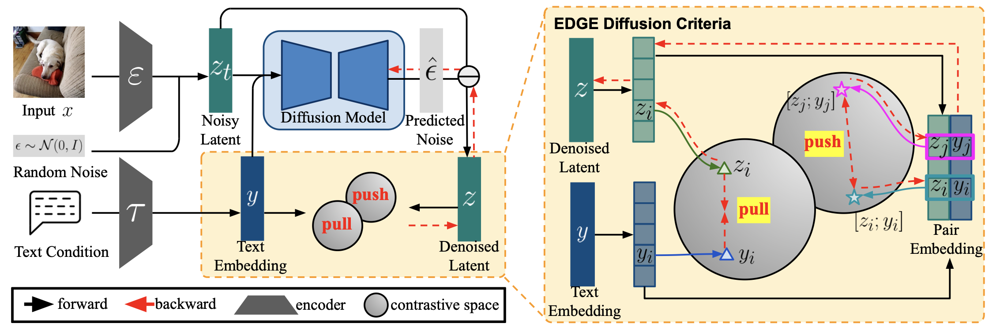

Publications



Dataset Quantization with Active Learning based Adaptive Sampling
Zhenghao Zhao, Yuzhang Shang, Junyi Wu, Yan Yan
European Conference on Computer Vision (ECCV), 2024
Paper
Monocular Expressive 3D Human Reconstruction of Multiple People
Zhenghao Zhao, Hao Tang, Joy Wan, Yan Yan
International Conference on Multimedia Retrieval (ICMR), 2024
Paper
Audio-Visual Navigation with Anti-Backtracking
Zhenghao Zhao, Hao Tang, Yan Yan
International Conference on Pattern Recognition (ICPR), 2024
Paper
Supplementing Missing Visions via Dialog for Scene Graph Generations
Zhenghao Zhao*, Ye Zhu*, Xiaoguang Zhu, Yuzhang Shang, Yan Yan
International Conference on Acoustics, Speech, and Signal Processing (ICASSP), 2024
Paper
Gated Multi-Scale Attention Transformer For Few-Shot Medical Image Segmentation
Zhenghao Zhao*, Hao Ding*, Dawen Cai, Yan Yan
IEEE International Symposium on Biomedical Imaging (ISBI), 2024
Paper
Machine learning enabled multiplex detection of periodontal pathogens by surface-enhanced Raman spectroscopy
Rathnayake AC Rathnayake*, Zhenghao Zhao*, Nathan McLaughlin, Wei Li, Yan Yan, Liaohai L Chen, Qian Xie, Christine D Wu, Mathew T Mathew, Rong R Wang
International Journal of Biological Macromolecules, 2024
Paper